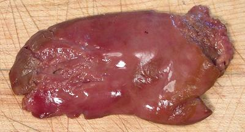

Duck Liver

If you buy a whole duck you'll get a liver inside - if you're lucky.
You won't find them in markets because they are in high demand with
chefs and food processors for making pâtés. If you want
more you'll have to make a special deal with a duck farm or poultry
vendor. The photo specimen was found frozen inside a duck and weighed
1-1/4 ounce.
More on Working with Ducks.
Buying:
If you want more than what you get inside a duck,
forget stores - you'll need to make a deal with a poultry vendor or duck
farm - and outbid the pâté makers.
Cooking:
If you got one with your duck, take the neck
skin and render the fat from it in a small frying pan. Eat the cracklings.
Slice your duck liver and give it a very brief frying. Eat with a little
lemon juice and salt.
bd_dklivz 090704 - www.clovegarden.com
©Andrew Grygus - agryg@clovegarden.com - Photos on this
page not otherwise credited are © cg1 -
Linking to and non-commercial use of this page permitted